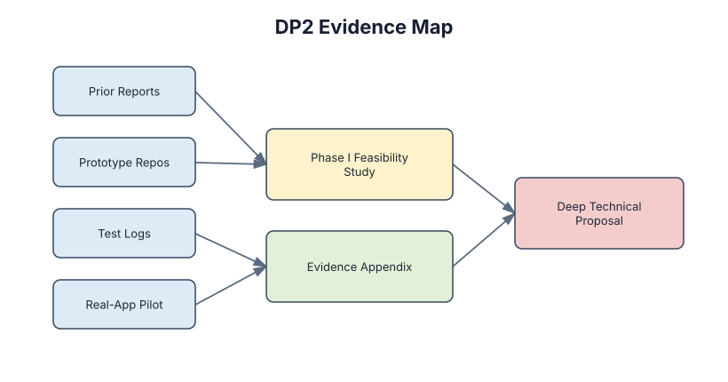
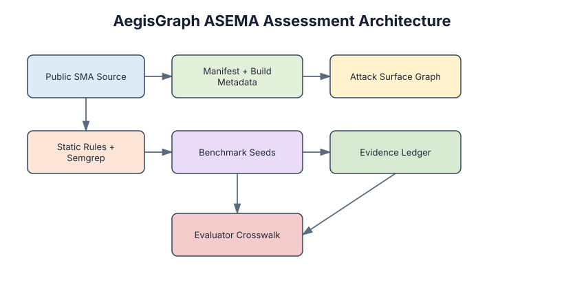
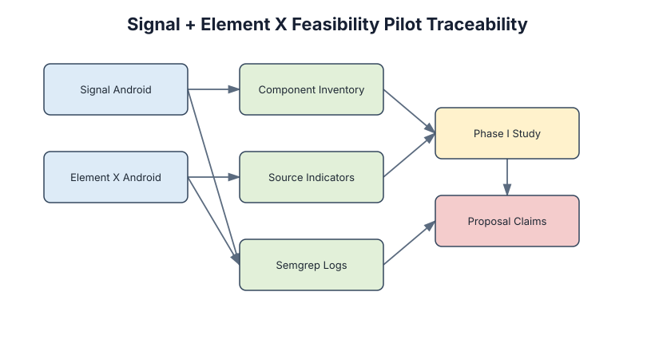

What This Proves
Evidence Map

Architecture

Pilot Traceability

Reproduce
python3 scripts/verify_public_package.py
python3 scripts/run_public_pilot.py --out /tmp/asema-public-pilot-output577 Industries · AegisGraph
A sanitized, reproducible evidence package for secure messaging application assessment: public target manifests, pilot summaries, benchmark seeds, diagrams, citations, and verification scripts.



python3 scripts/verify_public_package.py
python3 scripts/run_public_pilot.py --out /tmp/asema-public-pilot-output